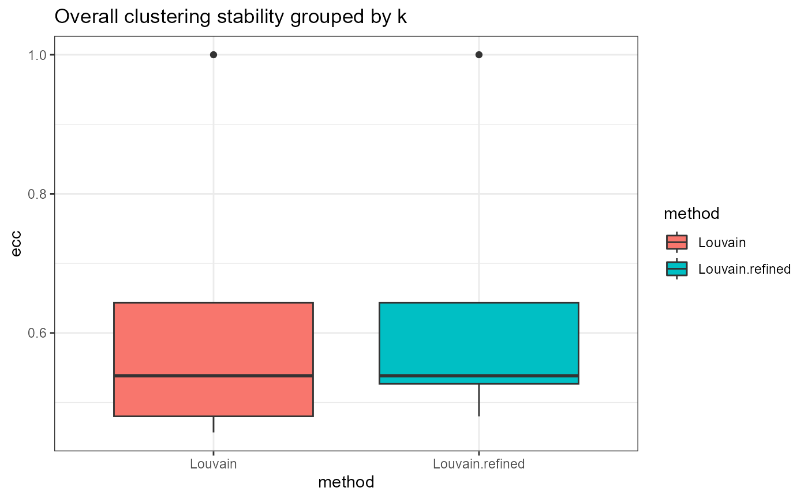

Assessment of Stability for Graph Clustering
Source:R/stability-3-graph-clustering.R
assess_clustering_stability.RdEvaluates the stability of different graph clustering methods in the clustering pipeline. The method will iterate through different values of the resolution parameter and compare, using the EC Consistency score, the partitions obtained at different seeds.
Usage
assess_clustering_stability(
graph_adjacency_matrix,
resolution,
n_repetitions = 100,
seed_sequence = NULL,
ecs_thresh = 1,
clustering_algorithm = 1:3,
clustering_arguments = list(),
verbose = TRUE
)Arguments
- graph_adjacency_matrix
A square adjacency matrix based on which an igraph object will be built. The matrix should have rownames and colnames that correspond to the names of the cells.
- resolution
A sequence of resolution values. The resolution parameter controls the coarseness of the clustering. The higher the resolution, the more clusters will be obtained. The resolution parameter is used in the community detection algorithms.
- n_repetitions
The number of repetitions of applying the pipeline with different seeds; ignored if seed_sequence is provided by the user. Defaults to
100.- seed_sequence
A custom seed sequence; if the value is NULL, the sequence will be built starting from 1 with a step of 100.
- ecs_thresh
The ECS threshold used for merging similar clusterings.
- clustering_algorithm
An index or a list of indexes indicating which community detection algorithm will be used: Louvain (1), Louvain refined (2), SLM (3) or Leiden (4). More details can be found in the Seurat's
FindClustersfunction. Defaults to1:3.- clustering_arguments
A list of additional arguments that will be passed to the clustering method. More details can be found in the Seurat's
FindClustersfunction.- verbose
Boolean value used for displaying the progress bar.
Value
A list having two fields:
all- a list that contains, for each clustering method and each resolution value, the EC consistency between the partitions obtained by changing the seedfiltered- similar toall, but for each configuration, we determine the number of clusters that appears the most and use only the partitions with this size
Examples
set.seed(2024)
# create an artificial PCA embedding
pca_embedding <- matrix(runif(100 * 30), nrow = 100)
rownames(pca_embedding) <- paste0("cell_", seq_len(nrow(pca_embedding)))
colnames(pca_embedding) <- paste0("PC_", 1:30)
adj_matrix <- getNNmatrix(
RANN::nn2(pca_embedding, k = 10)$nn.idx,
10,
0,
-1
)$nn
rownames(adj_matrix) <- paste0("cell_", seq_len(nrow(adj_matrix)))
colnames(adj_matrix) <- paste0("cell_", seq_len(ncol(adj_matrix)))
# alternatively, the adj_matrix can be calculated
# using the `Seurat::FindNeighbors` function.
clust_diff_obj <- assess_clustering_stability(
graph_adjacency_matrix = adj_matrix,
resolution = c(0.5, 1),
n_repetitions = 10,
clustering_algorithm = 1:2,
verbose = TRUE
)
#> Warning: executing %dopar% sequentially: no parallel backend registered
plot_clustering_overall_stability(clust_diff_obj)
